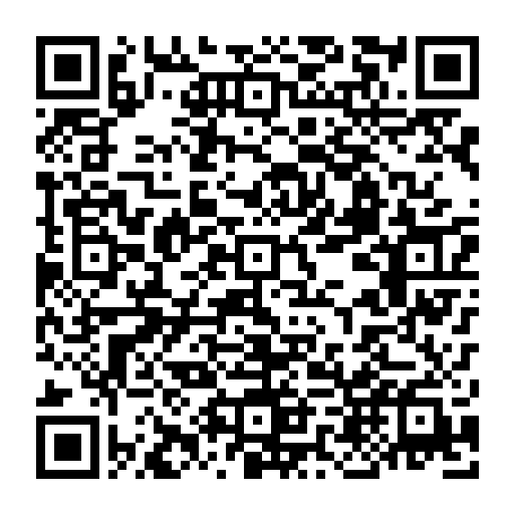

BREAKING THE PROMPT
AI-interacties ontwerpen voor cognitieve frictie
OPEN DE OEFENING
https://kasiata.github.io/ai-friction-workshop/
Werk in tweetallen; noteer je eigen ervaring. Woorden of schetsen zijn genoeg.
Collectie → Selectie → Verbinding
ONTWERPUITDAGING
Ontwerp een plek op de campus waar onbekenden gemakkelijk een gesprek beginnen.
01 SYSTEEM → INTUÏTIE
Verander een collectie, selectiemethode of verbinding. Vergelijk wat er ontstaat.
Ik verwachtte…
Ik veranderde…
Ik merkte…
Ik heroverwoog…
02 INTUÏTIE → SYSTEEM
Maak verzamelingen uit je tekst. Pas selectie en verbinding aan; neem je systeem mee naar oefening 1.
Ik verwachtte…
Ik veranderde…
Ik merkte…
Ik heroverwoog…
Eigen reflectie · Wat neem je mee? Wat zou je anders doen?
VERDER ONTDEKKEN

Artikel Project
Project Website
WebsiteLinkedIn